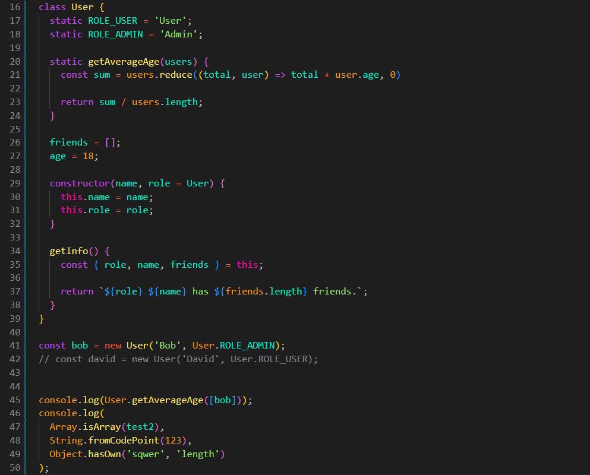

Static Fields and Methods
Intro
Agora iremos ver sobre metodos e propriedades estaticos
Agora iremos ver sobre metodos e propriedades estaticos
JS:

Para entendermos static, vamos começar com o seguinte código:
class User {
friends = [];
age = 0;
constructor(name, role = User) {
this.name = name;
this.role = role;
}
getInfo() {
const { role, name, friends } = this;
return `${role} ${name} has ${friends.length} friends.`;
}
}
const bob = new User('Bob', 'Admin');
console.log(bob.getInfo());
Temos uma classe chamada User. Dentro dela temos algumas propriedades, como friends e age, além do método getInfo().
Depois criamos um objeto chamado bob usando new User(). Esse objeto recebe o nome Bob e a função Admin como seu role.
O problema é que podemos passar qualquer valor como role. Por exemplo, poderíamos escrever uma string que nem sequer representa uma função válida:
const bob = new User('Bob', 'QualquerCoisa');
O JavaScript não vai impedir isso. O valor será simplesmente armazenado em role.
Então, como podemos deixar disponíveis alguns valores que pertencem à própria classe, como User e Admin?
Para isso podemos usar propriedades estáticas.
Uma propriedade criada com static pertence à classe, e não aos objetos criados por ela.
class User {
static ROLE_USER = 'User';
static ROLE_ADMIN = 'Admin';
friends = [];
age = 0;
constructor(name, role = User.ROLE_USER) {
this.name = name;
this.role = role;
}
getInfo() {
const { role, name, friends } = this;
return `${role} ${name} has ${friends.length} friends.`;
}
}
const bob = new User('Bob', User.ROLE_ADMIN);
console.log(bob.getInfo());
Agora temos duas propriedades estáticas: ROLE_USER e ROLE_ADMIN.
Como elas pertencem à classe User, acessamos essas propriedades usando o próprio nome da classe:
User.ROLE_USER; User.ROLE_ADMIN;
Dessa forma, ao criar o objeto bob, podemos passar User.ROLE_ADMIN em vez de escrever diretamente a string 'Admin'.
Isso também deixa o código mais fácil de entender, pois sabemos que ROLE_ADMIN é um valor definido pela própria classe User.
É importante entender uma diferença:
User.ROLE_ADMIN; // funciona bob.ROLE_ADMIN; // undefined
Isso acontece porque ROLE_ADMIN pertence à classe User, e não ao objeto bob.
Portanto, podemos pensar da seguinte maneira: propriedades normais pertencem aos objetos criados pela classe, enquanto propriedades static pertencem à própria classe.
Métodos também podem ser estáticos.
Usamos um método static quando queremos criar uma funcionalidade relacionada à classe, mas que não depende de um objeto específico.
Por exemplo, podemos criar um método para calcular a idade média de vários usuários.
class User {
static ROLE_USER = 'User';
static ROLE_ADMIN = 'Admin';
static getAverageAge(users) {
}
friends = [];
age = 0;
constructor(name, role = User.ROLE_USER) {
this.name = name;
this.role = role;
}
getInfo() {
const { role, name, friends } = this;
return `${role} ${name} has ${friends.length} friends.`;
}
}
O método getAverageAge() recebe um array de usuários através do parâmetro users.
Depois podemos usar reduce() para somar a idade de todos os usuários.
static getAverageAge(users) {
const sum = users.reduce((total, user) => total + user.age, 0);
return sum / users.length;
}
O reduce() começa com 0. A cada usuário, pegamos sua idade através de user.age e adicionamos ao total.
Depois que todas as idades forem somadas, dividimos o resultado pela quantidade de usuários usando users.length.
Por exemplo, se tivermos um usuário com 18 anos:
'use strict';
class User {
static ROLE_USER = 'User';
static ROLE_ADMIN = 'Admin';
static getAverageAge(users) {
const sum = users.reduce((total, user) => total + user.age, 0);
return sum / users.length;
}
friends = [];
age = 18;
constructor(name, role = User.ROLE_USER) {
this.name = name;
this.role = role;
}
getInfo() {
const { role, name, friends } = this;
return `${role} ${name} has ${friends.length} friends.`;
}
}
const bob = new User('Bob', User.ROLE_ADMIN);
console.log(User.getAverageAge([bob]));
O resultado será 18, porque temos apenas um usuário e ele possui 18 anos.
Perceba que chamamos o método usando User.getAverageAge(), e não bob.getAverageAge().
Isso acontece porque getAverageAge() é um método static. Ele pertence à classe User, e não aos objetos criados por ela.
Podemos resumir assim:
class User {
static metodo() {
// pertence à classe
}
outroMetodo() {
// pertence aos objetos
}
}
User.metodo();
const bob = new User();
bob.outroMetodo();
Métodos e propriedades estáticas também existem em classes que já fazem parte do JavaScript.
Por exemplo, temos Array.isArray(). Ele verifica se determinado valor é um array:
Array.isArray([]);
Nesse caso, usamos Array, que é o construtor, e acessamos o método estático isArray().
Também existe String.fromCodePoint(), que é um método estático de String.
Para objetos, temos métodos estáticos como Object.hasOwn(), que verifica se um objeto possui determinada propriedade.
Object.hasOwn(objeto, 'nome');
Também existem propriedades estáticas, como Number.MAX_SAFE_INTEGER e Number.MAX_VALUE.
Elas pertencem a Number, e não a cada número individual.
Portanto, a ideia principal desta aula é:
static cria uma propriedade ou método que pertence à classe, e não aos objetos criados por ela.
Static é usado quando queremos algo relacionado à classe como um todo, e não a um objeto específico.
Podemos acessar uma propriedade ou método estático usando o nome da classe:
User.ROLE_ADMIN; User.getAverageAge(users);
Já propriedades e métodos normais são acessados através dos objetos criados pela classe:
bob.name; bob.getInfo();
Podemos imaginar que os métodos e propriedades static são como pequenas funcionalidades específicas dentro da nossa classe principal. No nosso exemplo, User é a classe principal e seus métodos ou propriedades static ficam diretamente ligados a ela.
Essa é apenas uma forma de imaginar para facilitar o entendimento. Tecnicamente, eles não são subclasses; são propriedades e métodos estáticos da classe.
Podemos imaginar o static como uma ramificação da classe principal, onde criamos funcionalidades específicas para ela. Tecnicamente, não são subclasses, mas sim propriedades e métodos estáticos que pertencem à própria classe, e não aos objetos criados por ela.